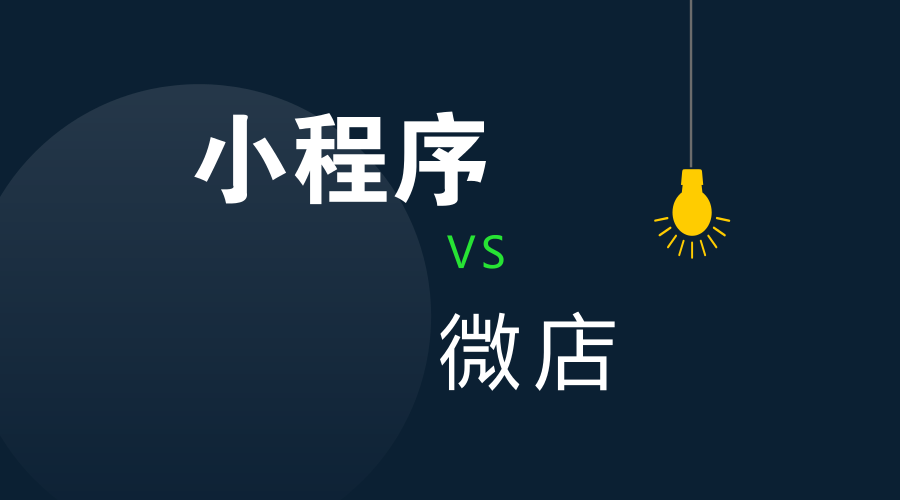
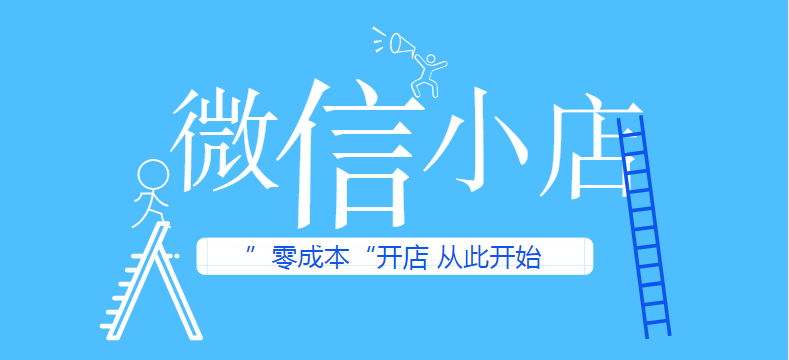
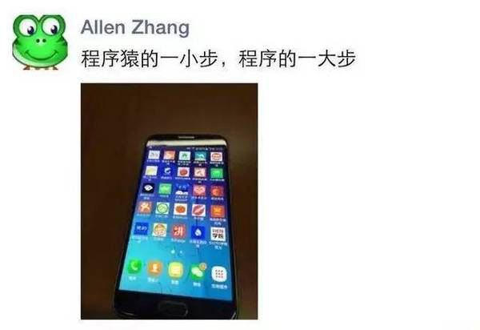

最近在推荐微信小程序的时候，不少朋友问我，微店跟小程序有什么区别？老实说，当我第一次看到这个问题的时候，我是有点懵，没想到小程序作为腾讯的亲儿子，还会有人提出这种问题。
如果非要把小程序跟微店做对比，那就应该是小程序可以开发成微店，但是微店就只能是微店，如果哪天小程序全面取代了微店、微商城，我是一点也不会觉得奇怪的。既然有不少朋友都这么感兴趣，那我们今天就来聊聊这个话题。

微店最开始可以溯源到2014年，那一年对腾讯来说，是非常有意义的一年，2014年3月腾讯宣布入股京东，彻底放弃了之前屡战屡败的电商业务。那一年，微商也开始在朋友圈野蛮生长。
2014年5月29日，微信小店上线，但是，现在提到微店，估计没有人会想到微信小店，这里面是有故事的。腾讯在入股京东时，有一个重要的条款，即不竞争承诺，腾讯保证不从事电商业务。而这一条款对于保证京东在中国电商的位置至关重要，同时也是资本市场对京东估值时一个重要的参考。
在京东上市不到一周时间，微信小店被低调推出，时间把控刚刚好。如果在京东上市前推出“微信小店”，可能对京东的估值、股价都产生不可控的影响。京东此前之所以低价卖给腾讯15%的股份，主要是由于两点，一是腾讯对于自己上市和估值的推动作用，第二就是微信的入口价值。而从长期价值看，微信的入口价值显然更为重要，但“微信小店”却可能让这个入口价值大打折扣。
所以，我们看到微信并没有大肆的推广微信小店，这更像是微信释放给市场的一个信号，微商、社交电商，你们还可以这么玩。在微信小店推出来之前，微信公众号已经对外开放了支付功能，但是企业如果要实现电商功能，需要有很强的技术开发能力，有了“微信小店”，商家就可以实现“零成本”开店。

果不其然，2014年下半年开始，各种微店平台开始兴起，现在微商主流使用的微店平台：微店、有赞都是在这个时候做起来的。与其说，腾讯要借助微信小店实现之前求而不得的电商，不如说是腾讯坐等微信电商的发酵，在合适的时机顺手再推一把，给合作伙伴一个方向。
在隔年3月，马化腾在参加两会期间，对微商火爆现象的点评，也验证了这一点，小马哥曾对记者表示“微店、微商很有意思，这个才刚刚起步，希望很多合作伙伴去做。”
在微信这样开放的生态环境中，短短三年间，微商、微店、社交电商诞生了一批估值在10亿元上下的公司，如微盟、有赞、云集、拼多多等。在这一波红利走到顶头的时候，微信顺势推出了亲儿子小程序。

在小程序上线之初，微信之父张小龙亲自为小程序站台，着重强调了线下线下线下，当然这也是有原因的。在微信小店推出的时候，恰好是电商的红利期，这一点从天猫双十一的数据可以明显看出来，2013年总销售额是350亿元，2014年是571亿元，2015年是912亿元，这几年，几乎都是以60%的速度在飙升。然而，在小程序推出来的时候，线上流量增长已经开始降速，而线下还有85%的零售市场亟待挖掘。
对于做微商的朋友而言，建议大家不管现在有没有微店，都开一个小程序微店。估计有朋友要问，小程序主要针对线下，微商又不是做线下的，为什么要开微店？不为什么，因为小程序是微信的亲儿子！
不管是线上还是线下，最为看重的，就是流量（客流），所以，我们今天主要对比一下两者的流量入口，目前两者已有的流量入口：
微店：公众号菜单、朋友圈、微信群；
小程序：附近的小程序、统一的小程序入口、搜一搜、公众号图文推送、公众号菜单、朋友圈（太阳码）、微信群、支持长按二维码识别、支持发会员卡券（官方的）、支持会员卡直接打开小程序；
从已有的流量入口，我们就已经可以非常明显的感觉到微信的区别对待，但这还不是要开小程序店的最重要理由，关键还是在未来，我们再来看看微信正在灰度测试的功能：
1、小程序可直接在手机桌面启动：
2016年11月18日，张小龙在朋友圈写了一句话，并配上了这样一张图片，原文是这样的：

这台安卓手机桌面上装满了一大堆手机应用，细心的朋友有没有发现，这些应用可能不是APP，而是正在公测的微信小程序，如果猜测不错，这也就意味着未来小程序可以直接从安卓手机桌面启动。
2、微信搜一搜可以直接搜索到小程序的商品页面：
据亿邦动力7月4日消息，微信正邀约电商相关企业参与一个名为“推广内测”的项目，虽然还处于邀请阶段，但几乎可以明确：微信即将实现“商品搜索”，即用户在“搜一搜”中输入商品关键词，搜索列表会直接呈现所有以小程序为载体的商品结果，而每一个搜索结果都可以直接调转到小程序商品详情页。
这也就意味着，如果你没有开小程序微店，你只能自己苦逼逼的刷朋友圈，刷各种群去推广产品，但如果你开了小程序微店，就可以直接曝光在9亿微信用户搜索中，9亿微信用户可以直接通过搜一搜搜索到你的产品；
3、广告推广：
这对微信、对想要利用微信社交关系赚钱的用户来说，是非常重要的一点。之前微商火爆，诞生了一批估值十亿左右的公司，但是微信没有从中获得任何收入，但是现在，在小程序搜索中，有了广告位，这是微信可以直接获利的。
同样的，在初期，这对广大小程序用户而言也是巨大的利好。
举个例子吧，你还记得广点通刚开通的时候吗？现今估值1亿美元的一条微信公众号，当初就是利用广点通，在短短半个月的时间内，打造出一个百万级别的大IP。如果说1亿美元估值大家没有切身的体会，那么月收入3000万，估计大家就比较有感觉了。
一个是能够带给微信收入的亲儿子，一个是第三方平台的微店，你认为，微信未来的流量会倾斜给谁？


 在线客服
在线客服 QQ咨询
QQ咨询 010-85951131
010-85951131